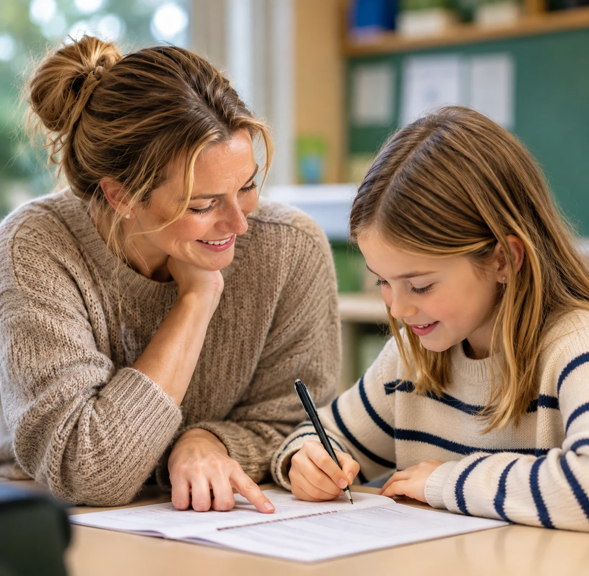
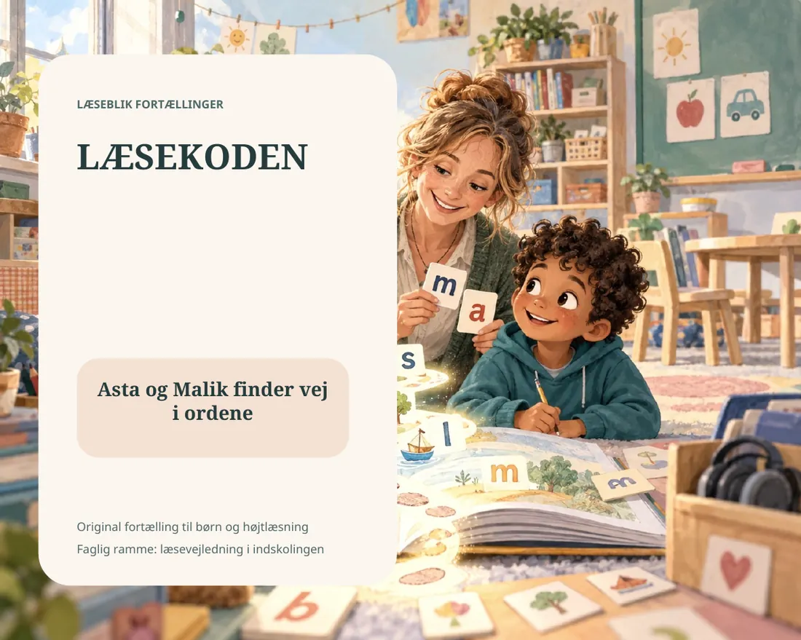
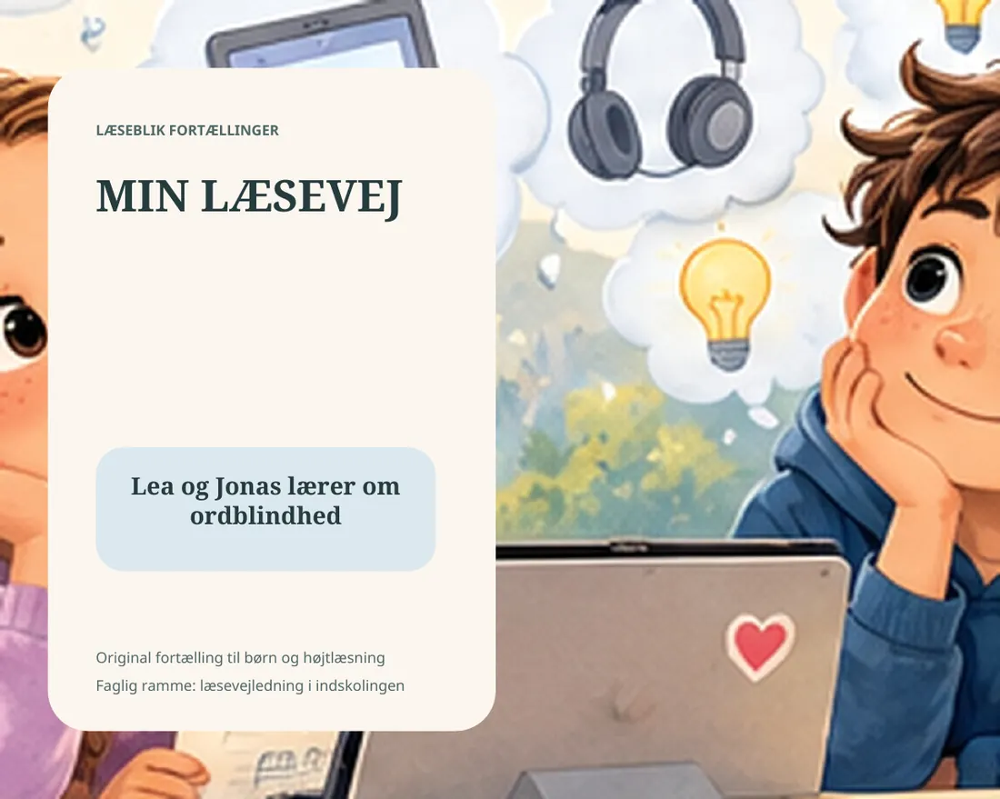
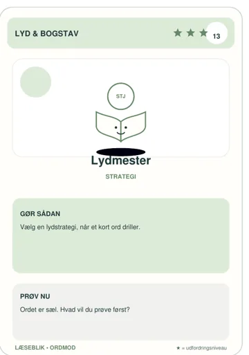
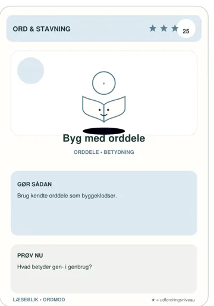
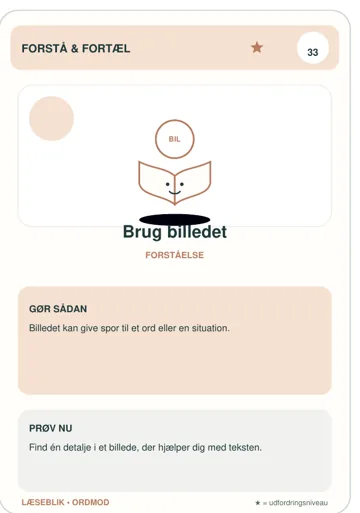
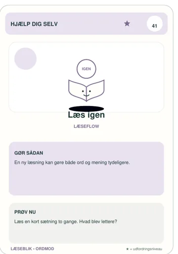

Sådan går det lige nu
Jeg vurderer selv
Vælg fra 1 til 5. 1 betyder “det er svært lige nu”, og 5 betyder “det kan jeg godt selv”.
Vælg svarene ovenfor. Oplysningerne bliver kun gemt i denne browser.
Her kan du afprøve læse- og skriveaktiviteter med et lærerfagligt blik. Brug dem som studieredskaber: Hvad træner aktiviteten? Hvordan støtter den eleven? Hvad skal du observere?

Fra teori til praktikElevens eget blik
Afprøv selvvurderingen, og overvej hvordan svarene kan blive afsæt for en elevsamtale, fælles mål og opfølgning. Det er et samtaleredskab, ikke en screening.
Sådan går det lige nu
Vælg fra 1 til 5. 1 betyder “det er svært lige nu”, og 5 betyder “det kan jeg godt selv”.
Barnets stemme
Svar med få ord eller hele sætninger. Den voksne må gerne skrive for barnet, hvis det gør samtalen lettere.
Svarene sendes ikke til Læseblik. De gemmes kun lokalt på den enhed, I bruger.
Formulér et mål og en hypotese om, hvad eleven skal øve.
Observer elevens strategier, hjælpemidler og deltagelse.
Beskriv dit næste didaktiske valg og behovet for opfølgning.
Afprøv oplæsning og tekstbearbejdning. Hvilke barrierer fjernes, og hvilke læsefærdigheder trænes ikke automatisk?
Undersøg om den studerende får blik for sammensætning og betydning, ikke kun korrekt svar.
Find tegn på brug af lydprincip, mønstre og selvkorrektion. Hvordan ville du følge op?
Vurdér om eleven kan vælge en strategi og forklare, hvorfor den passer til situationen.
Vælg et afgrænset læringsmål. Hvad vil du observere for at se en begyndende udvikling?
Afprøv en funktion, og lav en trinvis instruktion. Hvordan kan eleven bruge værktøjet selvstændigt?
Undersøg hvordan for- og efterled bidrager til både ordets form og betydning.
Overvej tempo, sikkerhed og forståelse. Hvordan undgår du, at hurtighed bliver eneste mål?
8 interaktive værktøjer
Vælg en aktivitet, prøv den, og undersøg kravene til læsning, stavning, forståelse og støtte. Overvej også, hvordan aktiviteten kan differentieres.
Indsæt en tekst. Få den læst højt, del den i mindre bidder eller markér lange ord.
Byg det rigtige sammensatte ord af to orddele. Du får 2 point for et rigtigt svar i første forsøg.
Vælg den korrekte stavemåde. Efter hvert svar får du en kort forklaring.
Hvilken strategi passer bedst til situationen? Der kan være flere gode muligheder i virkeligheden, men vælg den mest direkte her.
Vælg det svar, der passer bedst. Resultatet er en pejling, ikke en test eller diagnose.
Vælg den funktion, der passer bedst til opgaven. Øvelsen træner ikke knapper, men beslutningen om hvornår et værktøj giver mening.
Find den del af ordet, der bærer hovedbetydningen. Derefter ser du, hvordan forstavelse eller endelse ændrer ordet.
Læs den samme korte tekst tre gange. Brug timeren som støtte, ikke som konkurrence. Efter hver runde vælger du, hvad du vil fokusere på næste gang.
Maja cyklede hjem gennem parken. Vinden tog fat i træernes grene, og på stien lå små bunker af blade. Ved søen stoppede hun et øjeblik. En and svømmede tæt på bredden, mens regnen begyndte at prikke på vandet.
Læs roligt. Markér mentalt de steder, hvor du går i stå.
Fire gratis materialer, som kan bruges med det samme. De giver en enkel ramme for læsning, LST og samtalen om det, der virker.
Materialerne kan bruges til at planlægge, stilladsere og følge op. Vurder altid den konkrete elevgruppe og aktivitetens formål.
En enkel forældreguide med råd om ro, niveau, ordforråd, strategier og at afslutte med noget, der lykkes.
Hent PDFEt overskueligt ark til læseforståelse med spørgsmål og plads til korte noter.
Hent PDFEn fast arbejdsgang til oplæsning, ordforslag, tale til tekst og OCR.
Hent PDFEt fælles planark til elev, forælder og vejleder med ét tydeligt fokus ad gangen.
Hent PDFAfprøv en aktivitet, notér hvad eleven gør, og undersøg, hvad iagttagelserne kan fortælle om undervisningens næste skridt.
Fra observation til begrundet indsatsLæseblik fortællinger
Brug fortællingerne som casegrundlag: Hvad lærer eleverne om læsning og strategier? Hvordan kan en samtale åbne for elevperspektivet?

1. klasse • begyndende læsning
Asta og Malik finder vej i ordene
Asta og Malik har forskellige læsevanskeligheder. Sammen med skolens læsevejleder arbejder de med lyde, bogstaver, sammenlydning, små tekstbidder, gentagelse og forståelse.

3. klasse • ordblindhed og hjælpemidler
Lea og Jonas lærer om ordblindhed
Lea og Jonas får forskellige resultater i Ordblindetesten. Læsevejlederen hjælper dem med at forstå resultaterne og finde analoge og digitale strategier, der virker i deres skolehverdag.
Læs højt, stop ved de små strategier og tal om, hvad der hjælper barnet. I flipbøgerne kan siderne bladres med klik, piletaster eller swipe, og teksten kan læses højt via browserens oplæsningsfunktion. Flipbogen åbner i et nyt faneblad med en fast ← Tilbage til Læseblik -knap øverst.
Bibliotek
Arbejd med lydopmærksomhed, læseforståelse, orddele og stavning. Notér hvilke strategier opgaven aktiverer, og hvordan du ville tilpasse den.




Print selv • Kortspil til indskolingen
52 kort, der gør gode læse- og stavestrategier konkrete, enkle og sjove at øve.
ORDMOD er lavet til børn i indskolingen. Kortene bruges sammen med en voksen, en makker eller i en lille gruppe. Barnet samler strategier, som kan bruges igen, når læsning eller stavning bliver svær.
God start: Brug spilformen Fyld værktøjstasken . Saml 8 kort sammen, mindst ét fra hver farvefamilie. Til sidst vælger barnet de to strategier, der hjalp mest.
Spillet er træning og samtale, ikke en test eller diagnose.
Træn forlyd, indlyd og udlyd med korte lydrette ord.
Læs en kort tekst og find de detaljer, der skal med i billedet.
Genkend hyppige småord hurtigt og frigør overskud til forståelsen.
Lyt efter ord, der slutter med samme lydmønster.
Del længere ord i mindre bidder, så de bliver lettere at læse og stave.
Træn begyndelser som br, bl, tr, sk, st og gr.
Find rod, forstavelse og endelse og brug orddelene til at forstå ordet.
Find fejltypen, vælg den rigtige stavning og forklar reglen.
Opgaverne er træning, ikke test eller diagnose. Vælg hellere en kort opgave, der passer til elevens aktuelle behov, end mange opgaver på én gang.
Byg sammensatte ord og arbejd med, hvordan orddele skaber betydning.
Åbn øvelsenVælg den strategi, der passer bedst til en konkret læse- eller skrivesituation.
Åbn øvelsenEn kort pejling, der hjælper med at sætte ord på, hvad der fylder mest lige nu.
Åbn øvelsenGør en stor skoleopgave overskuelig ved at finde handlingsord og dele arbejdet i små trin.
Brug ordets dele og sætningen omkring det til at finde betydningen af nye ord.
En læselog med fokus på mål, strategi, nøgleord og det, der lykkedes.
Hent PDFEt strategikort til at vælge mellem oplæsning, tale til tekst, ordforslag, OCR og korrektur.
Hent PDFEt ark til at arbejde med forstavelse, rod og endelse i lange ord.
Hent PDFEt enkelt ark til gentagen læsning med fokus på sikkerhed, rytme og forståelse.
Hent PDF